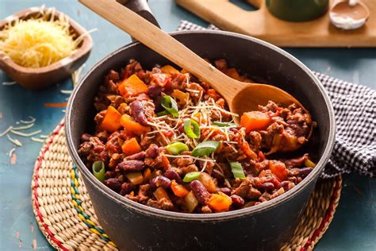

Chilli con Carne

This was one of the first easy
recipes I learnt to cook and can be
mastered in just a few attempts! It’s
healthy, cheap and tasty and makes
the ultimate student food. You can
make a large batch of this and then
store in the fridge for days or freeze
for weeks.
Ingredients
- Ground/minced beef 500g
- 1 Large onion chopped
- 2-3 Cloves of Garlic
- 1-2 Tins of chopped tomatoes 400g
- Squeeze of tomato pure
- 1 teaspoon of chilli powder(or to taste)
- 1 teaspoon of ground cumin
- Dash of Worcester sauce
- Sprinkle of salt and pepper
- 1 Chopped red pepper
- 1 tin of drained kidney beans 400g
Methods
- Raw beef, roll it in the flour...fry 4-5 pieces at a time in a hot saucepan to
seal...put to one side when all done.
- cut the onions into quarters...fry in the same frying pan as the beef...to soak up
the juices...
- Towards the end of frying the onion (they should be nicely brown round the
edges) throw in the smashed up cloves of garlic
- Transfer the beef, onions, garlic to a deep casserole dish. Stir in the remaining
flour
- pour on the bottle of beer -‐ really, it isn't going to be wasted!!!
- Cover, and cook at 150 for about 2 and a half hours...will be gorgeous when it
comes out, trust me...serve with mash
Back